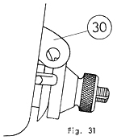
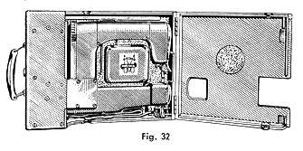
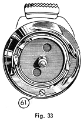
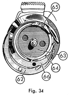
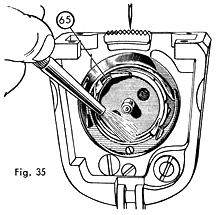

|
GEBRAUCHSANWEISUNG FÜR
DIE ELEKTRISCHE KOFFERNÄHMASCHINE FREIA Teil Fünf |
Mewa Freia Instruction Manual Part Five |
| Einkoffern der Nähmaschine | Replacing in Case | |
|
Licht und Motor ausschalten.
Stecker aus der Steckdose ziehen, Garnrollenhalter einschwenken und in
die Bohrung 19 (in Fig. 1) schieben. Bei hochgestellter Nadel und gehobenem
Nähfuß den Koffer abziehen. WICHTIG! Fadenhebel 30 in untere Stellung bringen (Fig. 31). Nähfuß senken. Durch Drücken des Rasthebels Sperre lösen und Maschinenkörper nach vorn schwenken. Kniehebel nach oben drehen. Gebrauchsanweisung, Nähmaschine,
Zubehörkästchen und Anschlußkabel in den Koffer einlegen,
Deckel mit leichtem Druck schließen. |
Turn off the motor and light. Unplug the machine from the electrical outlet. Swing in the spool pin and push into the hole 19. (Fig. 1). With the needle at the highest position and presser foot raised, pull off the case. Important! Bring the thread take-up lever to the lowest position (Fig. 31). Lower presser foot. Push on the rest lever, loosen the catch and swing the machine body towards the front. Turn the knee lever upwards. Put the manual, sewing machine, attachment box and cable in the case and close the lid pressing lightly. |
|

|

|
| Ratschläge zur Beseitigung kleiner Störungen | Troubleshooting | |||
| Wenn der Faden
reißt kann die Ursache sein: |
Abhilfe: |
Problem: Thread Breaking |
Solution: | |
| Nadel krumm oder
schlechte Nadelqualität. |
Nadel auswechseln. | Needle bent or of poor quality. | Replace needle. | |
| Oberfaden falsch eingefädelt. | Einfädelvorschrift beachten. | Upper thread incorrectly threaded. | See manual for correct threading. | |
| Oberfadenspannung
zu stark. |
Spannung lockern. | Upper thread too tight. | Loosen tension. | |
| Schlechte
Fadenqualität. |
Qualitätsgarn verwenden. | Poor quality thread. | Use good quality thread. | |
| Faden, Nadel und Stoff stehen nicht im Einklang zueinander. | Siehe Nadel- und Garntafel. | Thread, needle and
fabric are incompatible. |
See needle and thread chart. | |
| Maschine stark verschmutzt. | Reinigen lassen. | Machine is very dirty. | Clean machine. | |
| Wenn die Naht
unsauber wird kann die Ursache sein: |
Abhilfe: | Imperfect Stitches | Solution | |
| Oberfadenspannung falsch. | Spannung regeln. |
Upper tension incorrect. | Adjust tension. | |
Oberfaden oder Unterfaden falsch eingefädelt. |
Einfädeln nach
Vorschrift. |
Upper/lower thread incorrectly threaded. | See manual for correct threading. | |
| Nadeldicke, Faden und Stoff stehen nicht im Einklang zueinander. | Siehe Nadel- und Garntafel. | Thread, needle and
fabric are incompatible. |
See needle and thread chart. | |
|
Wenn die Maschine Stiche
ausläßt |
Abhilfe: | Skipped Stitches | Solution: | |
| Nadel verbogen. | Nadel auswechseln. | Bent needle. | Replace needle. | |
| Nadel falsch eingesetzt. | Nadel nach Vorschrift einspannen. | Needle set incorrectly. | See manual for correct setting. | |
| Falsche Nadelart. | Nadel System 705 verwenden. | Wrong type of needle. | Use needle type 705. | |
| Wenn die Nadel
zerbricht kann die Ursache sein: |
Abhilfe: | Needles Breaking | Solution: | |
| Nadel verbogen. | Nadel auswechseln. | Bent needle. | Replace needle. | |
| Der Stoff wurde während des Nähens gezogen. | Stoff nur leicht führen. | Fabric being pulled while sewing. | Lightly guide fabric | |
| Nadel war nicht richtig befestigt. | Neue Nadel nach
Vorschrift einspannen. |
Needle was not tightened. | Replace needle,see manual for setting. | |
| Wenn die Maschine
langsam läuft oder warm wird kann die Ursache sein: |
Abhilfe: | Machine Runs Slowly or Becomes Warm | Solution: | |
| Maschine verschmutzt. | Reinigen und ölen. | Machine is dirty. | Clean and oil. | |
| Maschine ohne ÖI. | Ölen nach Vorschrift. | Machine needs oil. | Oil according to manual. | |
| Maschine ist zu kalt. | Vor dem Gebrauch in warmes Zimmer stellen. | Machine is too cold. | Before use place in a warm room. | |
| Falsches Schmieröl verwendet. | Nur gutes Nähmaschinenöl verwenden. |
Wrong type of oil was used. | Only use good sewing machine oil. | |
| Kollector im Motor verschmutzt. | Vom Fachmann reinigen
lassen und evtl. Kohlenbürsten auswechseln lassen. |
Commutator in motor dirty. | Have cleaned by a repairman and replace carbon brushes. | |
| Wenn die Maschine
blockiert ist kann die Ursache sein: |
Abhilfe: | Machine is Jammed | Solution: | |
| Fadenreste haben
sich in den Greifer geklemmt. |
Siehe Seite 26. | Thread is jammed in shuttle. | See page 26. | |
| Hinweise zur Verhütung der Greiferblockierung | To Prevent Shuttle Jamming | |
|
1. Die eingefädelte Maschine
nie ohne Stoffunterlage in Gang setzen. Nicht auf der Stelle nähen
oder stopfen. 2. Vor Beginn einer Naht Ober-
und Unterfaden unter dem Nähfuß nach hinten legen. 3. Nach Beendigung einer Naht Fadenhebel so hoch bringen, daß sich die Arbeit leicht wegziehen läßt. |
1. Never sew or darn on the
machine without fabric under the presser foot. 2. When starting always place
both threads back under the presser foot. 3. When removing the work always raise the take-up lever high enough so the work can be easily pulled away. |
|
| Die Entfernung von Fäden aus dem Greifer | To Remove Thread From the Shuttle | |
| Durch
Hin- und Her-bewegung des Handrades ohne größere Gewaltanwendung
versuchen, den Faden zu zerschneiden.
Falls dies nicht gelingt, Greifer auseinandernehmen. Hierzu Stichplatte abschrauben, Spulenkapsel herausnehmen, Handrad drehen, bis die Greiferschraube 61 senkrecht unter dem Greifermittelpunkt steht (Fig. 33). |
Gently move the balance wheel forwards and backwards and attempt to cut loose the thread. If this does not work you will have to take apart the shuttle. Remove the throat plate, remove bobbin case, turn the balance wheel until the shuttle screw 61 is directly under shuttle spindle. (Fig. 33). |

| Greiferschraube
herausschrauben, Greiferbügel 62 nach unten ausschwenken. Greifereinsatz
63 drehen, bis die dritte Kerbe 64 über der Kante des Greiferkörpers
66 steht (Fig. 34). Greifereinsatz am Mittelstift fassen und vorsichtig
herausnehmen. Fadenreste entfernen.
Greifereinsatz in der gleichen Stellung wieder einsetzen, Bügel schließen, Greiferschraube einschrauben. Bei Auflegen der Stichplatte darauf achten, daß der Kapselhalter 60 in die Nute 65 des Greifereinsatzes zu stehen kommt (Fig. 14). |
Remove the screw. Swing the race cover 62 toward the bottom. Turn shuttle 63 until the third notch 64 is over the edge of the shuttle body 66. (Fig. 34). Grab the shuttle by the spindle and carefully remove. Remove jammed thread. Replace the shuttle in the exact same position. Close the race cover and replace screw. When replacing the throat plate it is important to note that bobbin case holder 60 is in the slot 65 on the shuttle (Fig. 14). |

| Reinigung und Schmierung | Cleaning & Lubrication | |
| Ab
und zu Stichplatte abschrauben und die darunter angesammelten Nähfussel
entfernen, ebenso auch aus dem Greiferraum.
Beim Wiederauflegen der Stichplatte ist zu beachten, daß der Kapselhalter 60 in die Nute 65 des Greifereinsatzes zu stehen kommt (Fig. 14). Es wird empfohlen, die Maschine bei normalem Hausgebrauch mindestens jeden Monat einmal gründlich nach dem nebenstehenden Schmierplan durchzuölen. Hierzu nur gutes Nämaschinenöl verwenden. Schlechte Öle verharzen, führen zu Zerstörungen und verursachen Reparaturkosten. |
Remove the throat plate and clean out all lint and dirt from the bobbin area. When replacing the throat plate it is important to note that bobbin case holder 60 is in the slot 65 on the shuttle (Fig. 14). With normal household use the machine should be thoroughly cleaned once a month. Use only good sewing machine oil. Poor oil will harden and can cause expensive repairs. |

| Nadel- und Garntafel zum Nähen der wichtigsten stoffarten. | Needle and Thread Chart for Sewing Common Fabrics | |||||||||
| Stoffart |
Faden
|
Nadel System
705
|
Zweckmäßige
Stichgröße
|
Fabric |
Thread
|
705 Needle
System
|
Best Stitch
Length
|
|||
|
Baumwolle
|
Seide
|
Cotton |
Silk
|
|||||||
| Sehr dünne
Stoffe Leinen, Batist, Musseline |
100-150
|
30
|
60
|
1-2
|
Very Thin Fabrics Linen, Batiste, Muslin |
100-150
|
30
|
60
|
1-2
|
|
| Dünne Stoffe Feine Leibwäsche, Taschentücher |
80-100
|
24-30
|
70
|
1-2
|
Thin Fabrics Fine Underwear, Handkerchief |
80-100
|
24-30
|
70
|
1-2
|
|
| Dünne bis mittlere
Stoffe Herrenhemden, div. Wäsche, Damenkleider |
70-80
|
24-30
|
80
|
1,5 - 2,5
|
Thin to Medium Fabric Men's Shirts, Underwear, Ladies Dresses |
70-80
|
24-30
|
80
|
1,5 - 2,5
|
|
| Mittlere Stoffe Bettwäsche, Leintücher |
60-80
|
20
|
90
|
1,2 - 2,5
|
Medium Fabric Bedding, Sheets |
60-80
|
20
|
90
|
1,2 - 2,5
|
|
| Dicke Stoffe Kleider aller Art für Damen, Leintücher |
40-60
|
16-18
|
100
|
2-3
|
Thick Fabric Women's Clothing, Sheets |
40-60
|
16-18
|
100
|
2-3
|
|
| Sehr dicke Stoffe Herren- und Knabenbekleidung |
30-50
|
10-12
|
110
|
2-3
|
Very Thick Fabric Men's and Boy's Clothing |
30-50
|
10-12
|
110
|
2-3
|
|
| Damenstrümpfe stopfen |
Stopfseide
|
70
|
0
|
Ladies Stockings Darning |
Darning Silk
|
70
|
0
|
|||